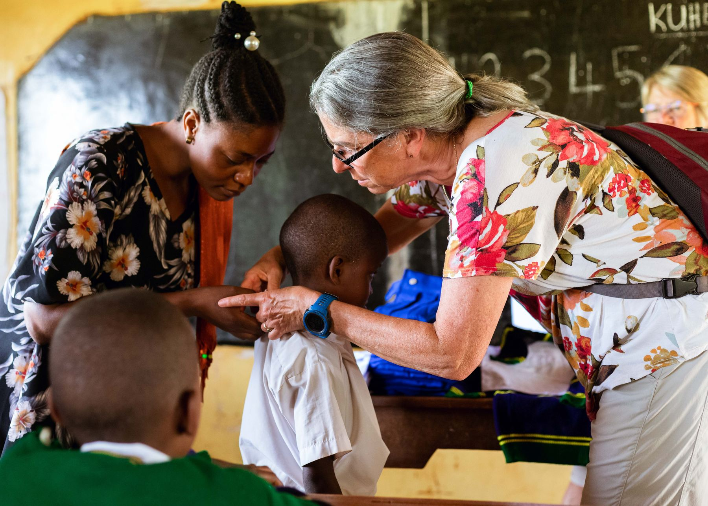
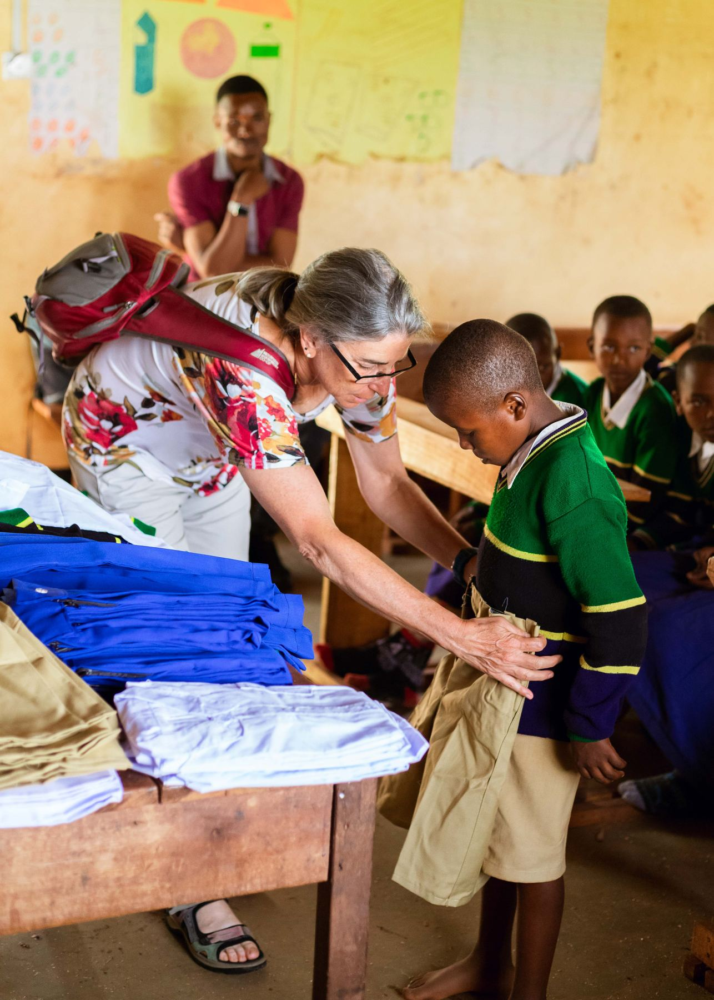
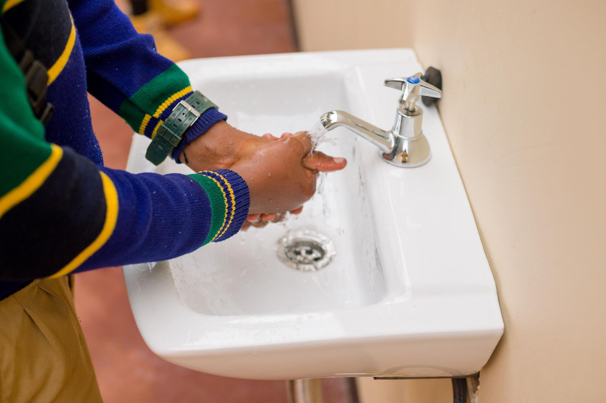

Children need more than access to education to thrive. Their health, home environment, and access to support matter too.
Habari Foundation’s health program brings awareness and practical support closer to children and families in Tanzania. Through community outreach, household visits, and connections with organizations providing health services, we help families understand their options and find support.

Our outreach approach begins by listening to families in their own communities. We seek to understand their concerns, share useful information, and identify services that may help.
The program focuses on HIV/AIDS and malaria awareness, mosquito-net support, and helping families connect with relevant health organizations.
By working alongside families and community partners, we aim to make health information and support easier to access.
We share information about malaria and support families with mosquito nets through household outreach. These visits also provide an opportunity to listen to concerns and discuss where families can seek further help.
We aim to improve understanding of HIV/AIDS among children, caregivers, and communities through outreach education and collaboration with organizations working in this field.
Families may need help understanding which organizations offer relevant services. We help connect them with organizations working on HIV, malaria, and related health needs.
A child’s wellbeing is closely connected to their family’s circumstances. Household visits help us understand concerns, identify support needs, and explore possible next steps together.
We make contact with families and arrange a suitable time to meet. Community relationships help guide our outreach.
We discuss the family’s concerns and circumstances, taking time to understand what support could be useful.
Depending on identified needs and available resources, outreach may include health awareness, mosquito-net support, and information about relevant services.
Where further assistance is needed, we help families identify organizations that provide appropriate services.

Our health program focuses on children facing poverty and vulnerability, including children who have lost a parent or have limited access to support.
We also engage parents, caregivers, and the wider community. Helping the people around a child access information and services is an important part of supporting that child’s wellbeing.
Help support the practical work of reaching families, sharing health information, and connecting communities with relevant organizations.
Support Our WorkContact our team to learn about current mosquito-net needs and how you can contribute. We can explain available opportunities and suitable donation arrangements.
Contact Us About NetsWe welcome conversations with health organizations, community groups, and supporters interested in contributing relevant knowledge, resources, or services.
Partner With UsExplore photographs from community activities to learn more about the settings and relationships behind Habari’s health outreach.
Your contribution can help Habari Foundation reach families with health information, practical support, and connections to relevant services.
Get in touch to learn about current needs and how you can take part.